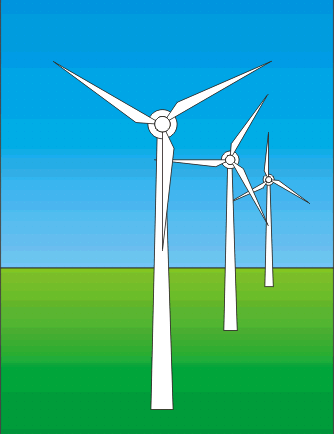
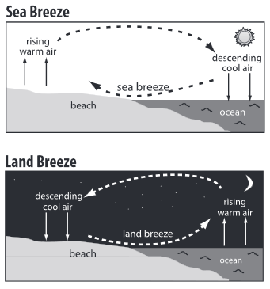

Power Plant
Thermal Power Plant
Steam Boiler
• Fire Tube Boiler
• Water Tube Boiler
• Boiler Feed Water Treatment
• Feed Water and Steam Circuit of Boiler
• Steam Boiler Furnace
• Coal Combustion Theory
Methods of Firing Steam Boiler
Fluidized Bed Combustion
Hydro Power Plant
Diesel Power Station
Nuclear Power Plant
Cogeneration
Solar Energy System
Basic Wind Energy
Wind Turbine
Theory of Wind Turbine
Thermoelectric Power Generators
Magneto Hydro Dynamic Power Generation
Economics of Power Generation
Economiser in Thermal Power Plant
Steam Condenser of Turbine
Jet Steam Condenser
Surface Steam Condenser
Wind Energy System
Wind energy simply means kinetic energy of air in motion. Air flown on the earth due to uneven heating of the Earth’s surface by radiant energy from the sun. We know that the Earth’s surface is containing very different types of land and lots of water (approximately earth 71% surface covered by water ). It sucks up the sun’s energy at unusual rates means the sun heat is not uniformly distributed over the earth’s surface. Wind or flow of air on earth is caused by massive convection currents in the atmosphere. As long as the sun heats up the earth, there will be wind energy available on the earth.

Formation of wind can be clearly visible at ocean bank where land and huge water meet. If we see during the day time, the air on top of the land becomes hot more quickly than the air above water. The warm air above the land expands, becomes less dense. But air over water becomes hot less quickly then that on the land hence air above the water remains heavier, denser compared to the air above the land. The hotter air above the land gets higher due to it's less density. As soon as this air gets high, cooler air over the water flows in to take the vacant place and consequently there is a wind hence wind energy. Again at night time, the land radiates heats more rapidly than water. Hence land portion becomes cooler more quickly than water. Because of that the air above the land becomes cooler than air above the water. Hence at night the hotter air above the water gets high because of lesser density. This vacant space will be occupied by cooler and heavier air from land portion. Hence there will be again a wind but in reverse direction compared to day time. In the same cycle, the full of atmosphere winds that surround the Earth are produced because of the land near the equator is heated more by the sun than land near the North and South Poles. The kinetic energy available in the wind is referred as wind energy and that energy can be efficiently utilized for generating electricity.

Wind is renewable or non-conventional source of energy. This is clean, has no any effect of greenhouse on the atmosphere. Most important thing - it is substitute of fossil fuels such as coal, oil or petroleum and natural gas etc. These are in limited quantity on earth and but primary source of producing electricity. Globally, 67% of electricity generated from fossil fuels, 13% from nuclear energy and rest of 20% from renewable energy source such as hydro energy, solar energy, wind energy, tidal energy etc. So we see how much the world depends on fossil fuel for producing electricity and that is why we focus on wind and other renewable energy sources to generate electricity for overcoming the dependence on fossil fuels. Running cost of electricity produced by wind is low once the turbines are installed and no much maintenance is required for long time. It also takes some land for installation but most of the land they are on can be still farm or used to crop animals so using of land is not an issue. One important thing is that, most cases wind plant is installed at the good height to obtain sufficient wind to produce electricity. It is the world’s fastest growing electricity resource.
During generation of electric energy by means of wind energy through wind turbines, numbers turbines are connected together to obtain desire output. This assembly of wind turbines together is called wind farm. Actually, single wind turbine may not be sufficient to produce desired electricity as our requirement that’s why we build a wind farm to produce larger electricity. We must choose the place for constructing wind farm where the wind speed is sufficient to move the blade of turbine. When the wind flows through the blades of turbine, the turbine rotates for running a generator to produce electricity. This electricity flows down through the cable attached to turbine tower. This cable is also interconnected with cables from other wind turbines in the wind farm. Hence, electricity from all turbines comes to a common node from where it is taken for further ends. After all this electricity is used directly for domestic or industrial load or is drawn by any grid to fulfill the requirement of electricity. This was a brief discussion on the basic of wind energy.
 by
by